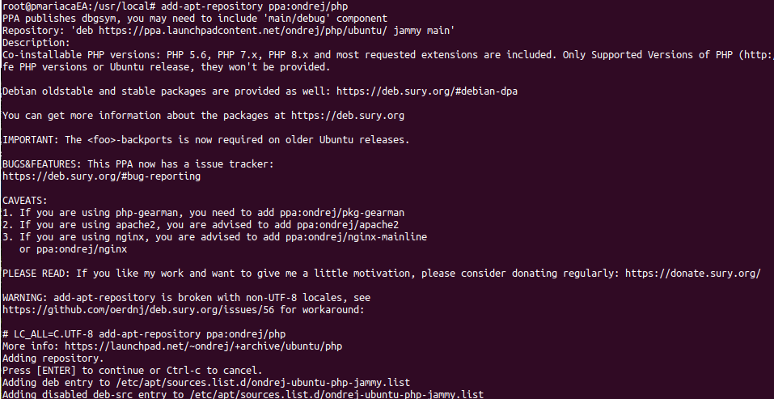

Es bastante sencillo, primero obtenemos el repositorio ppa:ondrej/php
sudo apt-get update
sudo apt-get install software-properties-common
sudo add-apt-repository ppa:ondrej/php
tenemos esta salida, sólo damos enter
Ahora instalar la primera versión
sudo apt-get install php8.1 php8.1-fpm
y sus extensiones
sudo apt-get install php8.1-mysql php8.1-mbstring php8.1-xml php8.1-gd php8.1-curl
verificamos la versión instalada
sudo php -v
sudo apt-get install php7.4 php7.4-fpm
y sus extensiones
sudo apt-get install php7.4-mysql php7.4-mbstring php7.4-xml php7.4-gd php7.4-curl
Para ver las versiones que tenemos y seleccionar la predeterminada:
update-alternatives --config php
otra forma para seleccionar es
sudo update-alternatives --set php /usr/bin/php7.4
Para configurar Nginx, se crea un archivo en el directorio cd /etc/nginx/sites-available/y la configuración básica es:
server {
listen 80;
listen [::]:80;
server_name wordpressprueba.com;
root /var/www/html/pato/wordpress-6.3.1-es_MX/wordpressprueba;
index index.html index.php;
location ~ \.php$ {
# try_files $uri $uri/ =404;
include snippets/fastcgi-php.conf;
#fastcgi_pass unix:/run/php/php7.4-fpm.sock;
fastcgi_pass unix:/run/php/php8.1-fpm.sock;
}
}
después nos deslazamos al directorio cd /etc/nginx/sites-enabled/ y hay que crear una liga simbólica
sudo update-alternatives --set php /usr/bin/php7.4
no olvidar relacionar la dirección IP en: /etc/hosts
reiniciar el servidor
service nginx restart
si algo no funciona, primero verificar con
nginx -t